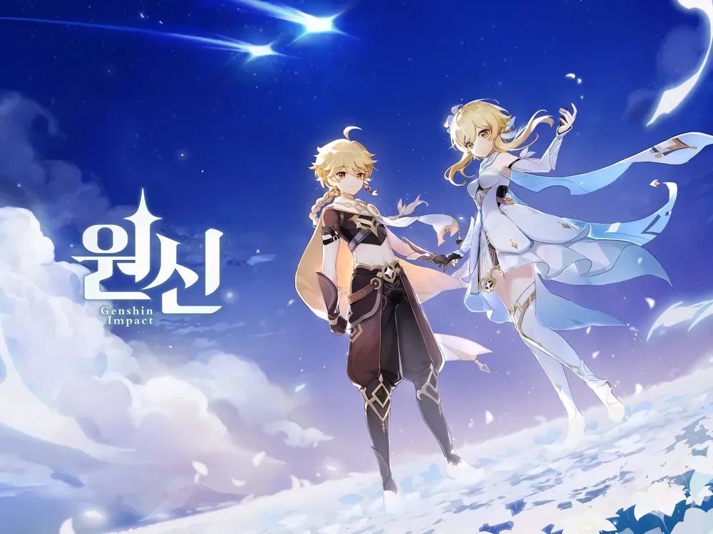

Tibat, a fantasy world where the seven elements come alive.  A long time ago, people were endowed with the power of the elements through their faith in the spirits and used them to explore the wilderness and build a nation. Five hundred years ago, after the destruction of the old nation, the heavens and earth opened... The calamities that swept across the continent have ceased, but the peace the people had hoped for has not come.